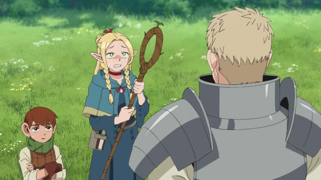
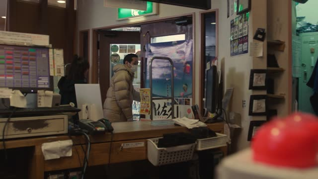
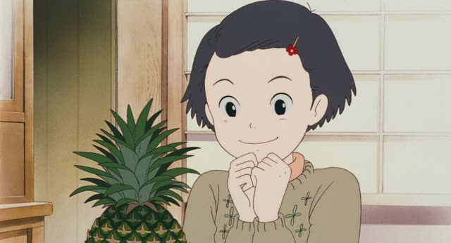
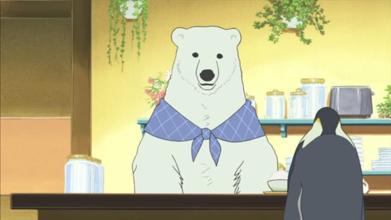

～たことがある
| Polite | ～たことがあります never: ～たことがありません, ～たことないです |
|---|---|
| Casual | ～たことがある・～たことある never: ～たことがない, ～たことない |
Same meaning: "have done before". Only the politeness changes.
Take a verb in its た-form and add ことがある: 行った + ことがある = "I've been there before". It's about experience: something that happened at least once in your life, not what you did yesterday.
Never done it: ～たことがない. In speech the が often drops: 行ったことある, 行ったことない.

YouTube · video
この建物も来たことがあります。
"I've been to this building too."
ことがあります is the polite ことがある. On this card, 来た + ことがあります = "I've come here before", at least once in his life.

Dungeon Meshi · Episode 1
聞いたことないな。
"Never heard of that."
Never done it is ～たことない, and the が often drops in speech. On this card, 聞いた + ことない = "have never heard", and な is thinking aloud.
Quick Examples
A new coworker asks about your travels.
A: 京都に行ったことがありますか。
B: はい、一度あります。
A: "Have you ever been to Kyoto?" B: "Yes, once."
The answer can just be あります: the rest is clear.
PoliteSomeone offers you natto at breakfast.
納豆は食べたことがありません。
"I've never eaten natto."
PolitePicking a movie with a friend.
この映画、見たことある？
"Have you ever seen this movie?"
CasualA friend suggests climbing Mt Fuji this summer.
富士山、まだ登ったことないんだ。
"I've never climbed Fuji."
CasualWith and without
京都に行きました。
"I went to Kyoto." One trip, at some point.
京都に行ったことがあります。
"I've been to Kyoto." It's part of your experience.
Examples from Media

Weakest Beast · Episode 8
僕ね 昔 ぶっ壊れたことがあるんです
"You know, I broke down once, a long time ago."
ぶっ壊れた ("fell apart") + ことがある. 昔: "a long time ago".

Quartet · Episode 6
いや 言われたことないです。
"No, nobody's ever told me that."
Samurai Champloo · Episode 22
そんな言葉を 聞いたことがありますか？
"Have you ever heard words like that?"

Only Yesterday
食べたことある？
"Have you ever eaten it?"
Good Morning Call · Episode 17
彼女いたことある？
"Have you ever had a girlfriend?"
Goblin Slayer · Episode 2
街に行ったことないから。
"Because I've never been to the city."

Shirokuma Cafe · Episode 10
頼んだことある？
"Have you ever ordered it?"
頼む → 頼んだ: the た becomes だ.

Shirokuma Cafe · Episode 46
テレビで見たことあるよ。
"I've seen it on TV."
Casual speech drops the が.
Further Reading
A Dictionary of Basic Japanese Grammar
Entry "koto ga aru¹" · pp. 196–198
Tae Kim's Guide to Japanese Grammar
Special Expressions with Generic Nouns · Using 「こと」 to say whether something has happened